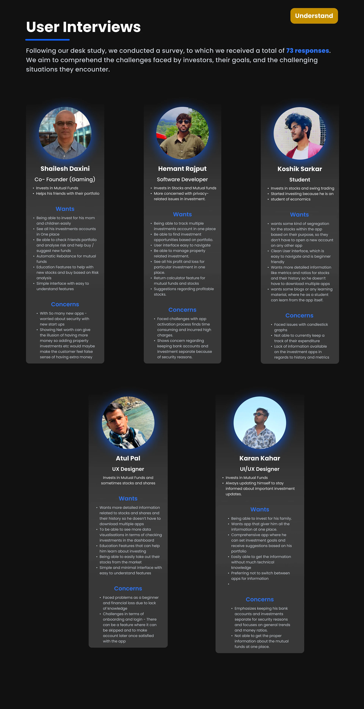
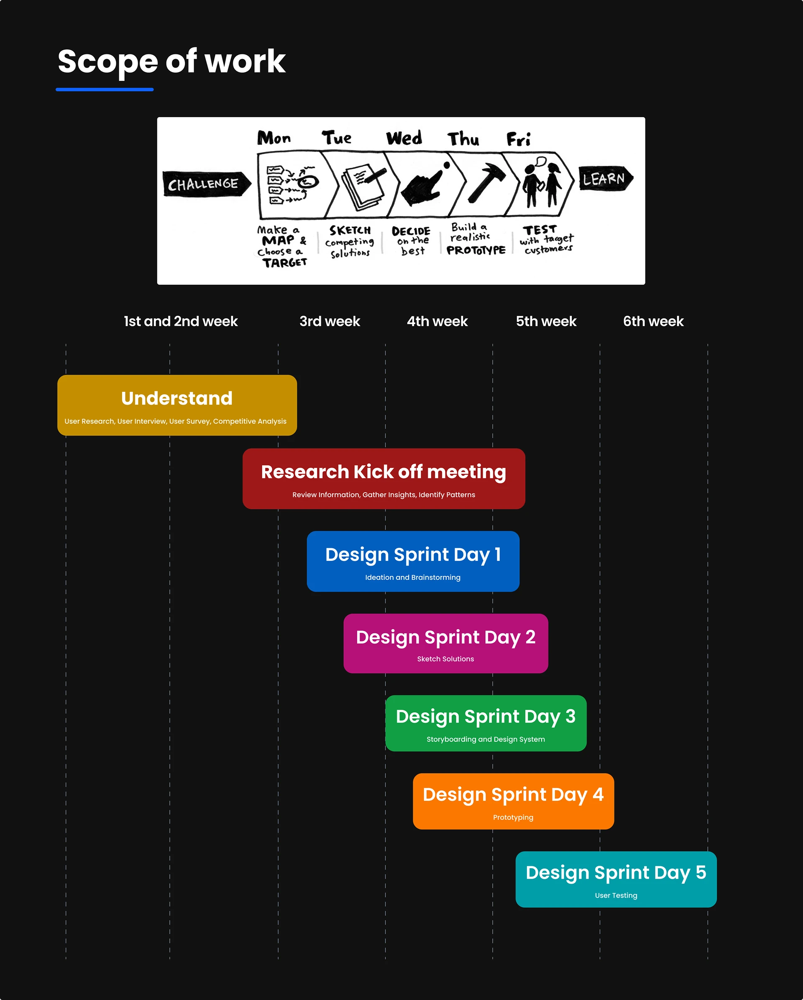
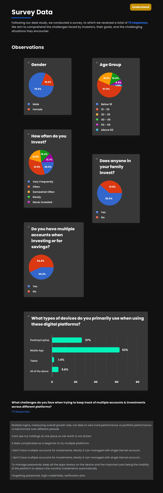
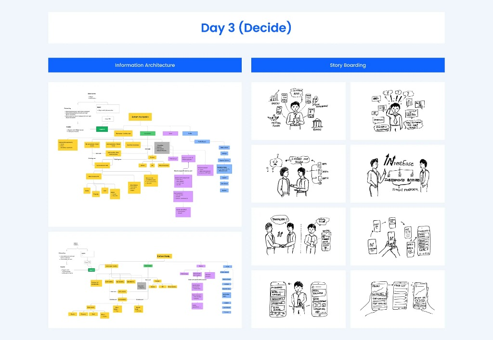
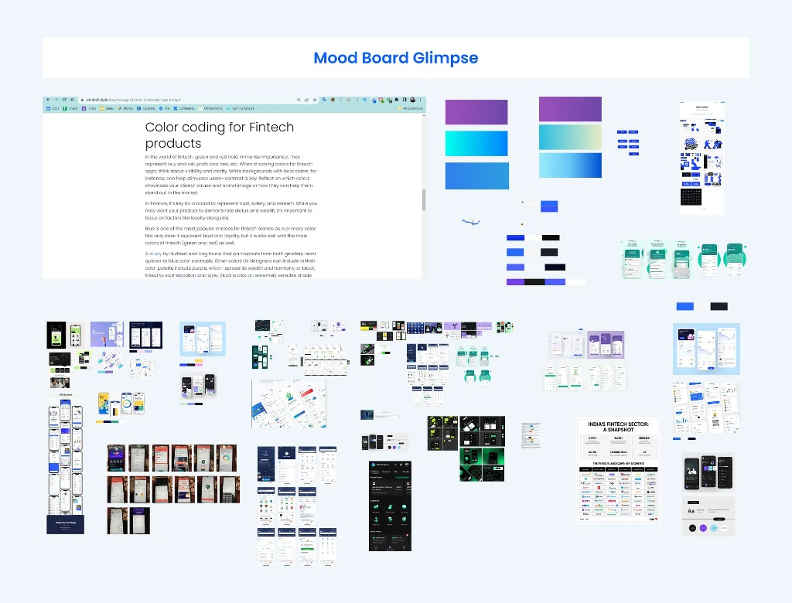
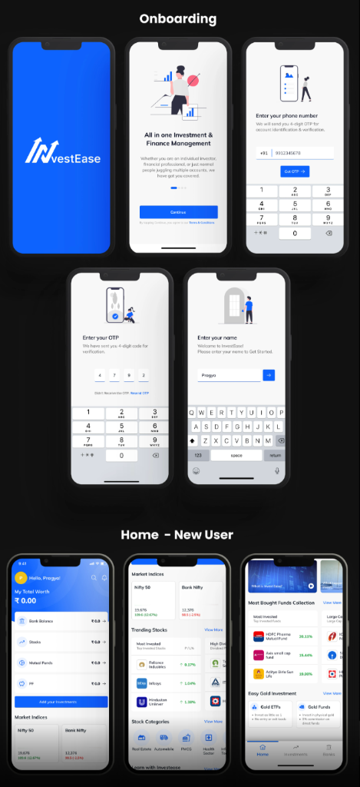
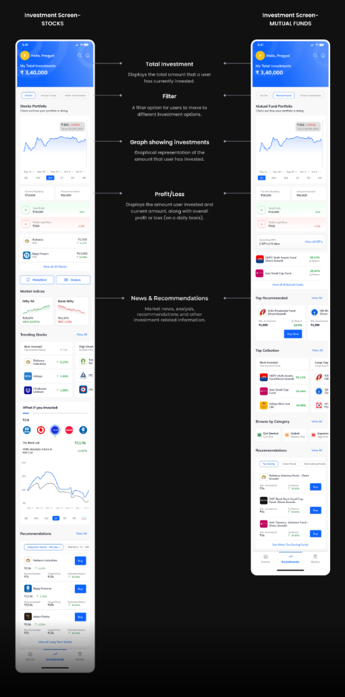
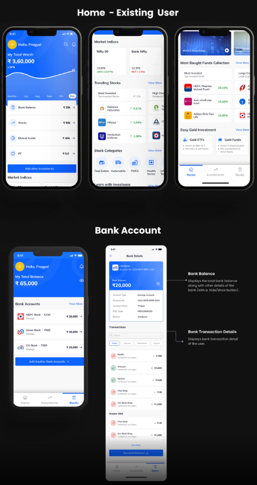

Simplifying the management of multiple accounts and investments through a unified, premium mobile experience.



Modern retail investors face severe account fatigue. Managing 3-5+ banking platforms, demat accounts, and disparate investment apps creates a cognitive load that prevents clear financial decision-making.
InvestEase was born from a Google Ventures 5-day Design Sprint methodology. The goal: architect a secure, unified view that consolidates banking and investments into one breathtaking, intuitive dashboard without sacrificing institutional trust.
Modern investors face scattered financial data across multiple banking platforms, demat accounts, and investment apps. There is no unified view of net worth, holdings, and transactions.
Users want one-tap access to net worth and portfolio health, preferring OTP-based login for frictionless security.
A unified dashboard tracking total net worth across all fragmented institutions. Real-time market indices, trending stocks, and personalized financial insights sit neatly below the fold.
Dive deep into individual stock performance. The investments detail view unpacks complex portfolio allocations using visual sparklines and clear typographic hierarchy.
A unified timeline of all banking transactions across connected accounts. We formatted high-volume data into elegant, scannable lists using Indian numeral formatting (₹).
Conducting in-depth research for a Greenfield project to understand the problem space, target audience, and the overall scope.
As we had to build an experience from scratch, we gathered immense data and synthesized every finding onto a FigJam board to establish a rock-solid foundation.
Structured innovation from problem definition to high-fidelity prototype.
Defining the core problems of managing multiple accounts and setting sprint goals.
Generating solutions through rapid ideation and prioritizing key ideas.
Establishing the Information Architecture, storyboarding, and finalizing visual branding.
Established the Information Architecture (IA) to organize the product's structure and navigation, followed by Storyboarding to visualize the user experience.

Created a moodboard and finalized the visual branding including the product’s name, colors, typography, logo, and iconography.

Bringing finalized solution sketches to life with a robust Design System.
The UI relies on an ultra-accessible contrast system (WCAG AAA) specifically engineered to instill trust.
Used exclusively in the mobile interface to convey numerical data cleanly.
Accessible Design: Never relying solely on color (▲▼ indicators for trends), maintaining >4.5:1 text contrast ratios, and ensuring minimum 44px tap targets across iOS/Android.
Validating the prototype with real target users to collect actionable feedback.
Crafted a set of specific, open-ended questions aimed at understanding user interactions, preferences, pain points, and overall satisfaction with the design. Questions were designed to elicit actionable insights for improvements.
Established clear and measurable metrics aligned with usability goals, such as task completion rates, time taken to perform specific actions, user satisfaction scores, and qualitative feedback to quantify the usability and effectiveness of the design.
Users successfully completed the onboarding process.
Most tasks were completed by the user without questions while they were in the process of task completion.
After exploration users encountered no issues when adding investment and completed the task quickly.
Reviews shows that users found information relevant and easily accessible within a single platform.
Asked users with verifying the ease of tracking their investments through the review of individual portfolios, profit and loss analysis, as well as managing watchlists and orders.
Assigned the task of locating their transactions and downloading statements. Users easily found their transactions, but one user expressed security concerns in the banking section.
A visual summary of the testing observations across 8 key app scenarios.
A comprehensive look at the InvestEase interface.



Detailed anatomical views of the core interface and modular architecture.
Interact with the fully working UI prototype below. Navigate between Home, Investments, and Banks screens.
This is a fully functional coded prototype. Tap the bottom navigation to switch between Home, Investments, and Banks screens. Scroll within to explore all features.